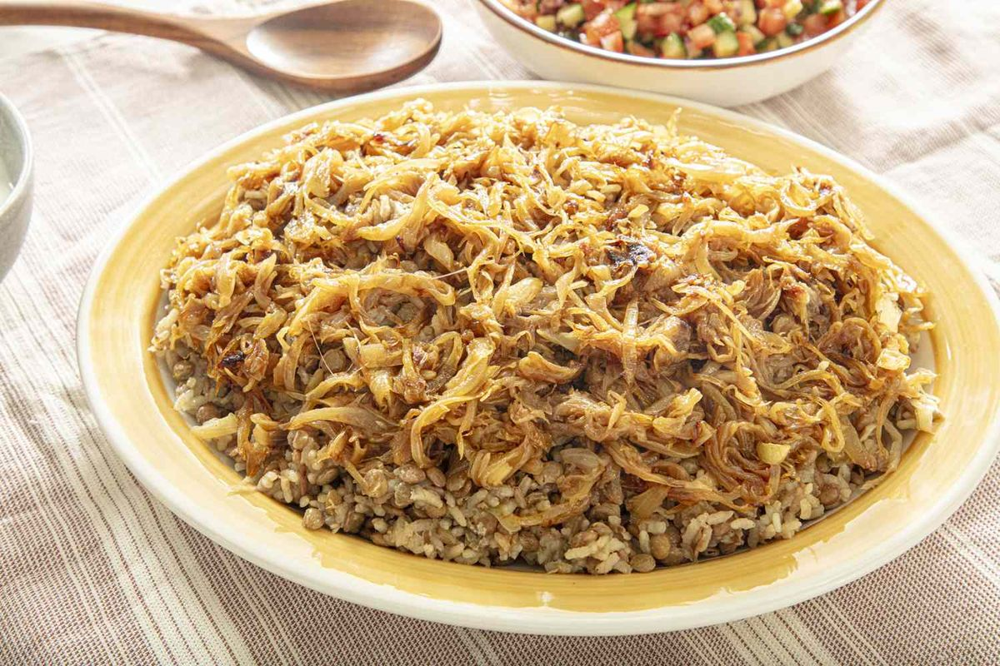

Mujaddara (Lentils and Rice with Caramelized Onions)

- Meal
- Dinner
- Serves
- 6
- Protein
- legume (brown lentils)
- Cook
- stovetop · 60 min active / 1 hr 45 min total · medium
- Make-ahead / leftovers
- yes (onions keep 3 days; reheats well) / yes
- Mediterranean
- yes
- WW tier
- moderate
- Status
- Trying out (probation)
Serious Eats' Levantine mujaddara: five onions slowly caramelized in olive oil until deep brown and crispy at the edges, some stirred into cumin-scented lentils and rice and the rest piled on top. Served with yogurt and a chopped cucumber-tomato salad. Pantry-cheap Middle Eastern comfort food — the onions make it.
Ingredients
- 6 Tbsp extra-virgin olive oil, divided
- 5 medium yellow onions (~2 1/2 lb), thinly sliced
- About 2 1/4 tsp table salt total, divided (Serious Eats lists 4 3/4 tsp Diamond kosher; table salt is half by volume)
- 1 1/2 cups brown lentils, picked over and rinsed
- 3 cups water (for the lentils)
- 4 tsp ground cumin
- 1/2 tsp black pepper
- 1 3/4 cups brown rice (long- or short-grain), rinsed
- 3 1/2 cups water (for the rice)
- To serve: plain yogurt (or Greek yogurt thinned with a little water); chopped cucumber, tomato, and onion salad with lemon and olive oil
Method
- Onions: heat 4 Tbsp oil in a large stainless sauté pan over medium-high. Add the onions and cook, stirring and scraping every 2–3 minutes, until collapsed and just turning golden, ~12 minutes. Lower to medium and cook ~8 minutes more until lightly golden. Move about 3/4 cup to a small bowl.
- Sprinkle 1/4 tsp salt over the onions in the pan and keep cooking, stirring every 1–2 minutes, until deep golden brown (~10 minutes), then on medium-low until deeply caramelized with some crisp edges (~10 minutes more). Set aside.
- Brown rice (start while the onions go): in a large pot, heat the remaining 2 Tbsp oil over medium. Add the reserved 3/4 cup golden onions, cumin, and pepper for 30 seconds. Add the rice, 3 1/2 cups water, and 1 1/2 tsp salt. Bring to a simmer, cover, and cook on low ~40–45 minutes until tender and the water is absorbed.
- Lentils (meanwhile): simmer the lentils in 3 cups water with 1/2 tsp salt until fully tender but holding shape, 20–25 minutes. Drain well.
- Fold the lentils into the cooked rice, cover, and rest 10 minutes off heat. Fluff gently.
- Pile onto a platter, top with the caramelized onions, and serve with yogurt and the chopped salad.
Notes
- Serves 6 as written by Serious Eats — no scaling.
- Brown rice (house rule): the original uses medium-grain white rice cooked together with par-cooked lentils for 18 minutes. Brown rice needs ~45 minutes and more water, which would turn the lentils to mush, so the lentils cook fully on their own and get folded in at the end. Same flavors, same cumin-onion base for the rice.
- The onion caramelizing is the work — 40+ minutes of stirring. Good weekend or WFH-afternoon dish; the onions can be done a day ahead.
- Kid-friendly: plain, savory, crispy onions on top. Add a fried egg or leftover chicken for anyone who wants more.
- Not Falafel Bowls / Roasted Veggie Hummus Bowls — lentils and rice, no chickpeas.
- Mediterranean ✓ (olive oil, legumes, whole grain, onion/salad). moderate for the 6 Tbsp olive oil.